1 Introduction
“Are we trapped in a flickering dream of infinite freedom within defined coordinates as an apathetic user dancing in between shiny gloom and glossy doom on the surface of a silent concept of arrogant machines*? ”1
With the final question of the letter To the Apathetic User of Arrogant Machines, I aim to introduce my theoretical conception, let it to wander as a circulating thought across the following pages of my investigation, in order to finally revisit it again in the realm of my conceptual translation.Computer-aided machines create “framing” environments that can influence us as users. These environments are akin to spaces that, in their expansiveness, demonstrate boundaries and, in their form, impact the users. Within the context of programmed “spaces,” boundaries are not readily definable as enclosing walls or ceilings. Analogous to these physically tangible constraints, the boundaries of computer programs manifest in abstract-conceptual form as predetermined parameters of the software. Within this programmed “space,” the user interacts with the machine.
What influence does the conceptual “space design” of machines exert on users? How are the positions of humans and machines in their relationship to be described?
I aim to explore these questions in the theoretical analysis and, through engagement with the answers, lay the groundwork for the conception of my visual implentation. To this end, I initially focus on the notion of an architectural and mental space, aiming to establish an analogy to the conceptual-digital space. Subsequently, I will delve into the position and role of a user within the relational dynamic between human and machine, ultimately proposing a thesis that associatively illustrates this relationship.
2 Space as concept
“The power of a ‘space’ lies in the possibilities it implies: immersion, habitation, ‘being-there,’ phenomenal plenitude, unmediated presence, all fall within its domain.”2
We enter, exit, or linger in spaces voluntarily or involuntarily, for a defined or undefined duration. Spaces are conceptual manifestations and can take on forms beyond architecturally functional building units, such as societal, mental, or technological environments. Tangible walls become invisible boundaries. However, the common characteristic of these spaces lies in establishing conditions with which we must engage when we enter them. Thus, we stand in a relational dynamic with them, rooted in the functions and mechanisms of these spaces, which can be either unilateral or mutual.Throughout this chapter, I aim to comprehend spaces as concepts, examine them in various manifestations, and explore their influence on the bodies within them.
Subsequently, I intend to expand this examination to the establishment of spaces by computer-aided machines, whose conceptual “space design” in the form of software influences us as users and provides a framework for our interaction with them.
2.1 Body in space
In general, a space relies on an architectural, geographical, political, or mathematical principle that is physically constraining in its extent or at least defined within its boundaries.3 Most distinctly, a physical space can be described as a container that encloses content through walls, influencing its shape and connotation through these boundaries.This impact of its shape is also reflected in the principle espoused by Bruce Lee, although he doesn’t understand the formative influence in a physically tangible sense but as a mental concept. He employs allegory to elucidate his method in his methode of fighting in Martial Arts. Drawing from the philosophy of Wu-Wei, he describes, using the metaphor of “flexible” water, the principle of the natural flow of movement achieved through an adaptive response – a mental adjustment – to the respective situation in combat.4
“Empty your mind, be formless. Shapeless, like water. If you put water into a cup, it becomes the cup. You put water into a bottle and it becomes the bottle. You put it in a teapot, it becomes the teapot.” 5 – Bruce Lee
Lee understands space as a psychological phenomenon, as a mental adaptation to new conditions arising from a situation. Metaphorically speaking, in this context, the situation - the water container - becomes the condition of the created space, to which a mental response is made - the adoption of the container’s shape. 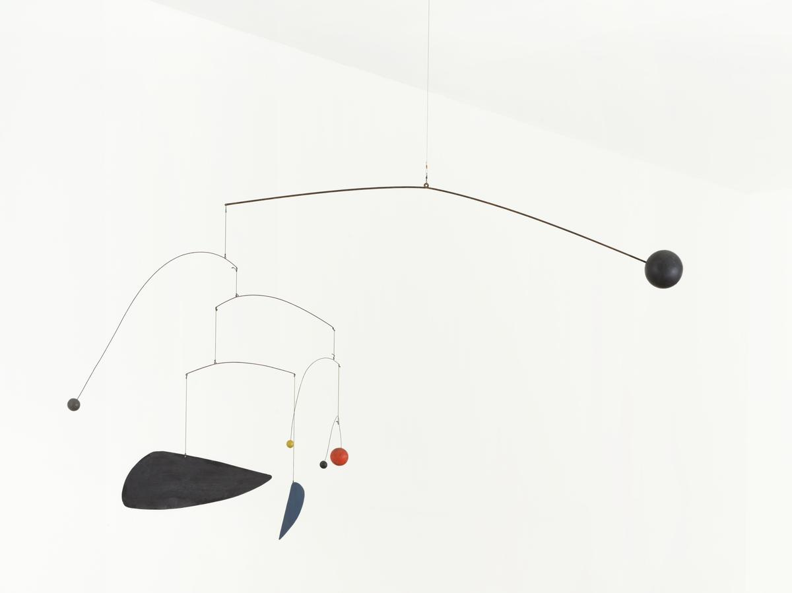Alexander Calder, Mobile, 1932. Source: https://www.tate.org.uk/art/artworks/calder-mobile-l01686, Accessed 16.11.23
Limitations, like the walls of a vessel, are not obviously present, or physically identifiable, in the works of Alexander Calder’s Mobiles. Calder’s Mobiles are interconnected shapes, constructing delicate structures that are set in motion by external influences, such as drafts of air. The individual components are not a result of the conditions of the location in which they are exhibited. Their individual form exists prior to being placed in the environment. However, when placed in space, they are subject to the conditions of the location as a whole, continually redefining itself through the constant evolution of their composition. The relationship between space and object thus manifests itself in a mutual influence on appearance, as the changing shifts in the composition of Mobile redefine its surrounding in equal measure.6
These two examples demonstrate that bodies and environments are in a relationship with each other. This relationship can be unilateral, as in Lee’s mental adaptation, or mutual, as in Calder’s Mobiles. Additionally, a space does not necessarily have to be physically tangible but can act as an influencing factor in a conceptual sense.
Bruce Nauman examined spatial influence and its effects on the human body “[...] in order to acquire insights into the formative powers of normative structures and social patterns.”7 > An example of his exploration is the piece Wall-Floor Positions, which he performed and filmed in his studio in 1968. In the 60-minute documentation of his performance, one can observe Nauman continuously shifting positions in relation to the spatial conditions of the walls and floor of his studio. In doing so, he illustrates the limitations and influences of the space on his body. His body becomes the fluid, moving part, while the space remains the conceptual construct.8

Wall-Floor Positions, Bruce Nauman, 1968, 60 min, b&w, sound Source: Electronic Arts Intermix (EAI). https://www.eai.org/titles/wall-floor-positions, Accessed 16.10.23
In both Wall-Floor Positions and other works like the series of Corridors installations, Nauman materializes the relationships between humans and their spatial surroundings. Through this, he aims to “[...] direct the experience of imposed postures to the visitors [...] that convey a tactile impression of the way constricting situations or environments have a psychological impact that manipulates human behavior.”9 The recipient is confronted with questions that bring awareness to the physical positioning in space and the sensory perceptions within the created situation. Nauman calls for intellectual engagement with the present and the implicit characteristics of their absence.10In summary, using Nauman’s example, the human body, as well as Lee’s or Calder’s object-like bodies, establish a relationship with their surrounding space. Bodies are influenced by spaces and can also influence the space.
Using this as a foundation, I now intend to incorporate the digitally programmed space as a conceptual framework of a computer program into the discussion and examine it in its design. This examination is an attempt to place the relationship between the user and the computer-mediated machine on a spatial-associative level, akin to Nauman, to compare the influence of conceptual considerations of spatial designs with the conceptual realm of software.
2.2 Digital space
A digital “space” of a computer-based application is free from physical restrictions; it is not bound by walls or ceilings. It is a “space” that, in its conception, creates an environment. The concept of this structure hovers as a framework over the whole and materializes as possibilities and their conditions. I would like to consider these conditions as equivalent to the walls of an architectural space. Consequently, “movement,” even if it may be digital, is influenced by the conditions programmed into the digital space. It is needless to say that these conditions must be agreed to, because “space” is a fixed concept that cannot be changed.Even though we do not physically enter this digital “space,” our movements are still dependent on its parameters. The principle of space and its influencing configuration is thus also found in software as a concept of the computer.

Jeffrey Shaw, Legible City, 1989 Source: https://www.jeffreyshawcompendium.com/portfolio/legible-city/s, Accessed 17.11.23
Media artist Jeffrey Shaw is considered a pioneer of interactive art and attempted to make immersive environments navigable and experiential with the body through his work Legible City. The installation consists of a folding bicycle and a cityscape represented in three-dimensional words projected onto a screen. These “primitive” virtual worlds can be "explored" by the viewer using the bicycle’s controls. However, the apparent self-determined navigation quickly gives way to critical comments from users. Florian Cramer, in “Exe.cut(up)able statements. Poetische Kalküle und Phantasmen des selbstausführenden Texts,” expresses that Legible City lacks the feel of a freely maneuverable environment where one’s movement is in sync with the depicted dynamics on the screen. The movement is “not spontaneous but part of a predetermined set of mathematical combinations”11 and thus not a journey driven by the participants’ bodies, but rather an illusory-controllable, guided ride through the system.12 He concludes, “The machine sets the framework for action, subjugates the recipient to its control, and ultimately remains uncontrollable.”13The critique of Legible City is representative not only of this interactive art installation but also of the relationship and functioning of the human-machine relationship, and the portrayal of a superficial illusion of machine operations by concealing algorithmic structures.14
Shaw’s space installation is not the promised free space but an illusion and a “[...] structure of an artificial behaviorist system in which body and technology enter into a precarious relationship of mutual control. It is the machine that wins in this scenario because it dictates the framework of abstraction and cannot be reprogrammed by the cyclist. This artificial [...] [absurdity] characterizes not only Shaw’s work but the entire field of so-called ‘ interactive art,’ which is based on a simplified, reductive understanding of interaction as cybernetic feedback and stimulus-response schemas, a behaviorism further restricted by machine algorithms hidden in black boxes.”15
The abstraction framework of the computer, as described by Florian Cramer, is a fixed construct that cannot be influenced or manipulated by the cyclist. The machine has control, and the participant is at the mercy of the inaccessibility of the automated mechanisms. In summary, one could say that the software of the application represents a restrictive, invisible, and unchangeable guidance of the user’s movements.
On a conceptual level, Shaw’s Legible City resembles the artificial worlds of a video game and, in a broader sense, a digital space or software, which is a computer-aided machine. In the following, I would like to examine the concept of computer-aided machines more closely.
3 Machine concept
The delimited space of interaction between the user and the machine is based on a computer program. Comparable to the boundaries or influencing factors of a physical space, the user is subject to the conditions of the program.Software, after all, are concepts that "come to life" in the execution of the code.16
“[...] [The] goal is to turn [...] code into an explicit list of instructions that can be carried out by interconnected logic gates, thus turning [...] code into something that can be executed – software.”17
Above all, as described in the last part of the preceding chapter, the space of the computer program is defined before the user interacts with it, firmly set in its execution, and immovable from the user’s perspective. The determinism of the program is the fundamental characteristic of the relationship between humans and machines, establishing clear power dynamics between the parties involved.In the following, I aim to focus on the concepts underlying these computer programs.
3.1 Programmed to be arrogant
In attempting to characterize digital machines, Joseph Carl Robnett Licklider juxtaposes humans as the reference point.“Relative to men, computing machines are very fast and very accurate, but they are constrained to perform only one or a few elementary operations at a time. Men are flexible, capable of ‘programming themselves contingently’ on the basis of newly received information. Computing machines are single-minded, constrained by their ‘pre-programming.’ ”18
Certainly, this observation should be understood within the temporal framework and context of technological progress in computers up to 1960. It’s undeniable that today’s computers far surpass the computational capabilities of those early machines, allowing them to handle not only simple tasks but also a multitude of processes simultaneously. However, Licklider’s conclusion, particularly in his conceptual portrayal, points to an intriguing perspective.At this point, I’d like to take a look back at the history of computer-assisted processes, which can be traced back to the development of the automated loom by Joseph Marie Jacquard in the early 19th century. The control of the loom was achieved through hardware-level mechanisms. Using punched cards, the loom encoded the holes in the cards into movements of machine’s components, resulting in patterns in the textiles. This step of automation sparked outrage and led to revolts, as workers realized they were no longer in full control of their work processes.
In the 1930s, the control of automated processes shifted from hardware to software, albeit initially on an abstract level through Alan Turing’s mathematical model (Turing machine).
As we can observe in current computer technology, over the subsequent years, this fundamental model of controlling and executing computational and command processes has been expanded. The integration of data processing, for example, through sensors (data-driven), as well as the ability to react to events (event-driven), has made the system significantly more flexible and dynamic.19
3.2 Code as choreography
Against this backdrop, Licklider’s characterization of the machine as a "single-minded creature," whose inherent concept (software) limits its capabilities, is a relevant notion. History demonstrates that machines have always been subject to a concept that has only evolved in complexity over time.This idea is echoed in Alexander R. Galloway’s discourse, where he no longer draws comparisons to humans but instead relies on the principles of conceptual art, specifically those of Sol LeWitt.
“In conceptual art the idea or concept is the most important aspect of the work. When an artist uses a conceptual form of art, it means that all of the planning and decisions are made beforehand and the execution is a perfunctory affair. The idea becomes a machine that makes the art.” 20 – Sol LeWitt
With this definition outline, Galloway emphasizes his notion that the idea becomes the machine. Programming brings the concept to life, and the machine is in control of executing its concept at the moment of work.21Galloway further observes that “LeWitt’s art is an algorithmic process. The algorithm is prepared in advance, and then later executed by the artist (or another artist, for that matter).” 22
The necessity for the software concept to exist before execution lies in the specificity of the language of the machine, as expressed by Friedrich Kittler in the following words:
“Code is a language, but a very special kind of language. Code is the only language that is executable. [...] ‘[t]here exists no word in any ordinary language which does what is says. No description of a machine sets the machine into motion.’ 23 So code is the first language that actually does what is says – it is a machine for converting meaning into action.”24
Software is a language of direct impact that implements the concept at the moment of code execution. Consequently, the existence of the concept before its execution is assumed. In this regard, I would like to highlight Licklider once again, who illustrates the difficulties of this language and implicitly acknowledges the responsibility of programmers.He describes that the preformulation of problems requires that“[...] all the alternatives must be foreseen in advance.”25 This has significant consequences because “[i]f an unforeseen alternative arises,the whole process comes to a halt and awaits the necessary extension of the program.”26 However, predicting all possibilities and integrating an appropriate response into the software is simply impossible.27
As the comparisons and arguments presented show, a computer is, in its programming, a rigid concept, whose framing scope defines the preconceived possibilities.
The central question now concerns the distribution of roles in the relationship between the computer and the users, as well as the implications of this system on usage.
3.3 Veiled in complexity
It is evident that the computer can have a significant impact on its users, even if this is not immediately apparent. One reason for this lies in the inaccessibility of the structures and operations of these systems. For most people, what happens behind the screen interface is not necessarily clear. The cause is not disinterest but rather the complexity and opacity of this technology, which may exceed the scope of understanding for many.“If you open a computer or a computer toy, you see no gears that turn, no levers that move, no tubes that glow. Most often, you see some wires and one black chip. [...] [T]he physical opacity of this machine encourages it to be talked about and thought about in psychological terms.”28
It is difficult to explain how non-physical, tangible things work. However, characterizing them in human-like terms is more straightforward, and attributing characteristics that ascribe free will or intelligence to computers is plausible. 29 To exaggerate slightly, one might ask whether the consequences of this opacity are akin to surrendering to the workings of computers. Whether the difficulty of access leads to a passive stance or even resignation towards computer-assisted processes. Above all, there’s a danger that invisibility may lead to misunderstanding the influence of a programmed environment and its predetermined parameters, as well as its impact on the framework of interaction.3.4 Technically solved
Computers are ubiquitous and take on functions that, upon closer examination, may need to be questioned in terms of their necessity. However, the enthusiasm and progress in the development and application of automated processes through computer technology seem unlikely to wane in the future. Yet, if everything suddenly becomes technical and all abstract problems are solved with computers, do we lose sight of reality?The following example serves as an associative exploration attempting to illustrate this consideration. 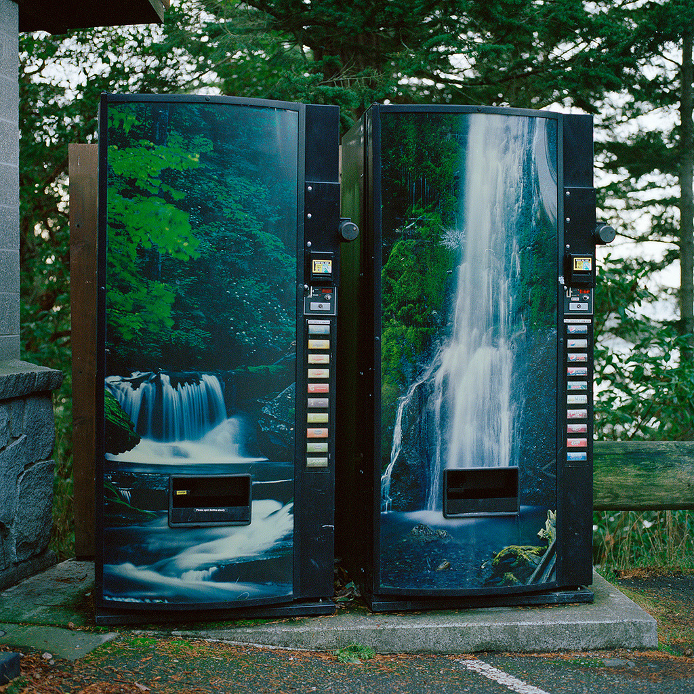
Author unknown, Source: https://24.media.tumblr.com/44b4436080d97dcea626595d544b9e10/tumblr_mk9384rkab1rkogzbo1_1280.jpg, Accessed 22.11.23
Two beverage vending machines, cloaked in natural camouflage, are accompanied by the promise of refreshment, available monetarily at the push of a button. Both outside and inside, surrounded by nature, these automated water dispensers advertise their wares - as if it has always been this way - and obstruct the view to the true source, which disappears into invisibility in its banal immediacy.Are technical solutions truly simplifications of perceived problems? And does the omnipresence of programmed solutions lead to their legitimization? Does a "computerized normalcy" suppress questioning of functionalities?
4 In the users’ eyes
Turning now to the second part of the connection between machine and human: the human as the user. After the previous chapters analyzed the functioning of computers and identified the lack of understanding among users, the question arises: how can communication with machines be possible?At the outset of this chapter lies the fundamental question of defining a "user." This starting point serves to examine the interface to computerized machines more closely and, subsequently, to understand the significance of interface design.
4.1 How to become a user?
In the German language, the interaction of a user is limited to a computerized space because, by definition, a user is a “[...] person who uses a computer.”30. However, in English, the word is used in a broader context. Here, a user is a person who uses a product or a machine or avails themselves of a service.31.The most well-known and perhaps the first official user of an interactive computer system is the engineer Douglas Engelbart, who presented a usable system called the oN-Line System (NLS) at the Augmentation Research Center (ARC) on December 9, 1968. In a carefully crafted demonstration, famously known as "The Mother of All Demos," he showcased a system distinguished by its hardware and software configurations. Remarkably, the presentation highlighted interaction possibilities via a computer mouse, keyboard, and screen connected to the computer, which are considered pioneering in the operation of modern operating systems.32

Douglas Engelbart uses the 5-button chord keypad of the NLS, a standard QWERTY keyboard and a 3-button mouse, 1968. Source: https://invention.si.edu/mother-all-demos, Accessed 14.11.2023
At the time of the introduction of the new system, future users were skeptical, describing it as “[…] complicated, hard to learn, poorly documented […]”33. From today’s perspective, we understand that it is only a matter of time until the “[…] right human […] [ is found, one who adapts to] the new artifact and methodology of operation […]”34 and feels comfortable in their newfound role as a user.35There is no trace today of the hesitant mood surrounding the new possibilities from back then, which is likely also due to the scientific examination of cognitive processes, making the operation of the system increasingly intuitive. In 1971, Allen Newell, a US computer scientist and cognitive psychologist, expressed this sentiment with the following words.36
“There is emerging a psychology of cognitive behavior that will permit calculation of behavior in new situations and with new humans…” 37
Newell is likely referring to our generation, which, thanks to Cognitive Engineering or User-Centered Design, has no qualms about communicating through a Human-Computer Interface (HCI). Today, this comes as naturally as if being a user were practically ingrained from birth.4.2 User-machine interface
Communication through interaction with computers is ensured by a Human-Computer Interface. The term "interface" is illustrated by Stéphan Vial, who points out that “[t]he term originally refers to the surface created by the border two bodies have in common.”38 In the field of computer technology, the term carries a deeper significance because, due to its complexity, a computer is not initially as easy to use for humans as other everyday objects. An interface is therefore essential An interface is therefore essential for the usability of computers 39 and “ [...] refers to a point of intersection between two systems where they [– human and computer –] can exchange information and therefore communicate, or interact.”40In the context of the user as a user of the system, the term User Interface (UI) is introduced. In addition to interaction possibilities through keyboard, mouse, and other hardware components, the screen surface is perhaps the most important interaction interface and is transformed into a Graphical User Interface (GUI) through its design.41
With the development of new technologies and increasingly smarter user interfaces, as heralded by the release of the iPhone by Apple in the late 2000s, computer usage has become more complex. Screens are no longer just control surfaces; they are equipped with sensory systems42 and can now “[...] gaze back at the viewer, respond to his or her touch, heartbeat, and position in space [...]”.43 The possibilities for us, as well as the spectrum of different user data and processing capabilities, have increased. Consequently, the conditions in which we control our bodies through this new reality, or are controlled by it, have expanded.44
The necessity of this interface – the Human-Computer Interface – in the complex relationship between humans and computers is therefore to be viewed as an essential communication foundation for both sides. Designing the Human-Computer Interface is of crucial importance and is manifested in conceptual-technical and visual decisions.
4.3 Designed navigation
The exploration of designing these digital devices and applications falls within the field of User Experience Design. Here, the strategy of User-friendly Design prevails, which makes decisions towards intuitive, natural-feeling, and standardized navigation. It argues that “[...] ‘good’ design must feel intimate and natural to allow the interface to erase itself and pass as an extension of the organic,”45 as Tomasz Hollanek argues in his essay “Non-User-Friendly: Staging Resistance with Interpassive User Experience Design.” He continues that this strategy of design attitude could have critical side effects on the users of these applications. Because this type of user guidance, “[...] aims to misdirect our attention from what is happening behind the scenes.”46 The influence on our actions and thoughts is concealed by this design attitude.47Hollanek’s concerns regarding the guided user navigation of a conceptually designed and structured application also reflect the investigations into the tools used for designing these applications. Sherry Turkle, an American psychologist and sociologist at the Massachusetts Institute of Technology, examined the then-novel digital work environments with the advent of computer-aided design (CAD) and the acquisition of modern computers and computing facilities in 1983.48 She collected accounts from students who lamented, “ [...] that the computer’s logic, to which they must bend to do their work, inhibits creative thinking. Others regret seeing their work as designers reduced to simple options in a menu.”49

Valie Export, Ping Pong. Ein Film zum Spielen - Ein Spielfilm, 1968 Source: https://www.valieexport.at/jart/prj3/valie_export_web/main.jart?rel=de&reserve-mode=active&content-id=1526555820281&tt_news_id=16, Accessed 14.11.2023
The criticism of the "guided direction" of computer-assisted interactions is also reflected in the art of Valie Export, where she examines interaction in a cinema hall.With the art installation Ping Pong. Ein Film zum Spielen - Ein Spielfilm, Export developed around 1968, in the early days of interactive art, the call for the emancipation of the audience in cinema films by questioning their role. In the installation, visitors are invited to hit the randomly projected dots on the screen with a paddle and a ball. By switching from passivity to activity, she demonstrates guided actions and reveals the hierarchy established in the cinema hall between directors as dictators of the rules and the audience as passive and naive consumers, and the cinema hall as a manipulating instrument.50
“reiz und reaktion. die ästhetik des konventionellen films ist eine physiologie des verhaltens, seine kommunikationsweise ein ereignis der perzeption. ping pong expliziert das herrschaftsverhältnis zwischen produzent (regisseur, leinwand) und konsument (zuschauer). was hier das auge dem hirn erzählt, ist anlass zu motorischen reflexen und reaktionen. ping pong macht die ideologischen verältnisse sichtbar. zuschauer und leinwand sind partner eines spiels, dessen regeln der regisseur diktitiert.” 51 – Valie Export

//////////fur//// art entertainment interfaces, Painstation 1 - Enhanced Duelling Artefact, 2001 Source: https://www.fursr.com/projects/painstation, Accessed 14.11.2023
Painstation by the artist group //////////fur//// art entertainment interfaces, highlights self-conditioning in the interaction with software. In this artwork, the famous game Pong is supplemented with punishment (electric shocks and slaps) for the losers, emphasizing the idea of conditioning through the application in the sense of behaviorism 52 – a behavior based on objective observation without introspection or empathy.53 The player submits to the rules of the game or the software, thus unreflectively conforming to the technology and its conditioning framework.4.4 Comfort in passivity
Immersing oneself in the world of a user appears effortless, almost natural. Interactions are made intuitive and comfortable through user-centered design of interfaces, while processes and influences remain opaque and conditionally influential. Breaking free from this structure and shedding the role becomes challenging, as users transition into passive consumers. Questioning the influencing factors in the interaction with machines is neglected.Author unknown, Source: https://buzzly.info/upload/1281/cd5fa3d1b219b63614657d7be7b5dc7e.jpg, Accessed 29.11.2023
5 Human-machine relationship
Throughout this discussion, we delve deeper into examining how the form of communication explored in the previous chapter describes the relationship of users with computers.This prompts the question of what role the user plays in this constellation and why their passive stance emerges to maintain this framework and keep it in balance.
5.1 Balanced stability
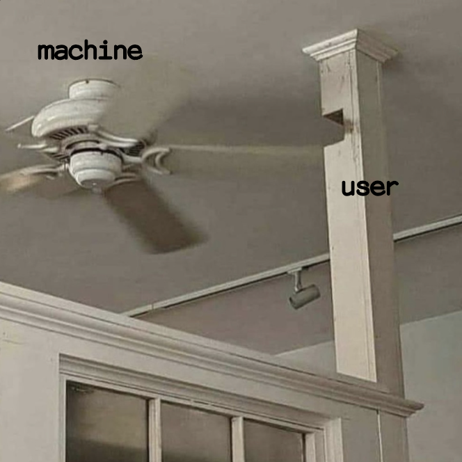Image author unknown, modified by author. Source: https://9gag.com/gag/abVnMQb, Accessed 19.09.2023
Drawing on the visual metaphor depicted above, I aim to elucidate the relationship between humans and machines. In this illustration, the sturdy wooden post represents the users, while the fan symbolizes the entirety of computerized technology.The initially harmonious stability quickly gives way to questions about the concessions made by both parties. It’s evident that these limitations are primarily attributed to the users, whose form had to accommodate a cutout, which, without the machine, would leave an unfilled gap.
Metaphorically, this illustration depicts the omnipresence and intertwining of machines in the life of a user. However, it also raises two questions: Who depends on whom? And who existed before whom?
While the latter question may seem self-evident in its banality – as from an evolutionary perspective, the existence of users predates that of machines and plays an essential role in the stability of the space – the juxtaposition of the two elements in the space raises legitimate doubts about this explanation. The image suggests that the fan must have existed before the wooden post (or the idea of the machine before the emergence of users) because the wooden post has adapted its position to accommodate the fan through the cutout. By positioning humans as users at the beginning of the causal chain, one ignores the fact that humans can only be designated as users through the machine. In other words, the concept of the machine turns humans into users. However, it overlooks the fact that the machine could not have come into existence without the ideation of users.
The question of who existed before whom, or who found their position through whom, defies a straightforward answer. Nevertheless, the equilibrium of this relationship appears undeniable, yet it remains open which side had to make compromises and which side holds the upper hand in this relationship. Insight into the positions of this relationship will be provided by the subsequent analysis of the concept of interaction in computer science compared to its use in the field of sociology.
5.2 Interaction ≠ Interaction
Interaction is the driving force in the human-computer relationship. As a computer-operating organism, the human being falls into a subjectless process whose interaction is subordinated to the machine’s preconditions.54Communication with the system of a machine is manifested, for example, through the “[…] user activity of mouse clicks, [as] the technological act of triggering various program parameters within a cybernetic feedback loop,”55 and is distinguished from interpersonal interaction, an interpretative stimulus-response model in the sociological sense. The difference lies in the positions of the participants. In the communication between humans and computers, there is no mutual interpretation.
The confusion over the meaning of the term "interaction" stems from its parallel emergence and usage in computer science and sociology in the early twentieth century. Nevertheless, the meaning of the term in the two contexts is interesting because the interpretive level, a fundamental characteristic of interaction between humans, is absent in the interaction between humans and computers. The positions of the relationship become clearer in this comparative analysis.
The computer is interactive, and humans interact.56 Hence, misunderstandings on the part of machines are not possible; there are only clear requests from the user to the computer system.
5.3 The marriage of man and machine
Early ideas about understanding the relationship between humans and machines resulted in a visual commentary on the cover of TIME Magazine around 1983, reacting to the advent of personal computers entering people’s home offices.
Cover and backcover: "The Computer, Maschine of the Year," TIME Magazine, January 1, 1983 Source: Lauren Cornell, Ed Halter: Mass Effect. Art and the Internet in the Twenty-First Century, Cambridge (2015), p. 11
Instead of selecting a "Man of the Year" as usual, the magazine decided to honor the personal computer as the "Machine of the Year." The depiction is dominated by the prevailing cautious and fearful societal response to the new technology.Concerns are expressed with the following words: “Instead of simplifying or solving problems, computers may have brought on addictive overwork and automated joblessness. Rather than increas productivity, computers in business seem to have multiplied activities without ensuring substantive results.”57
In accordance with this sentiment, the backdrop is immersed in a gloomy environment. While the computers take center stage in the scene, the users appear to be trapped in a state of passivity, portrayed as lifeless figures in their supporting roles.58 The initial skepticism towards computers was subsequently replaced by fear of an additional source of distress. People saw them as the cause of an increase in work that yielded no significant results, thus being inefficient in terms of productivity enhancement.59People felt themselves at the mercy of an unstoppable technological dynamism and were convinced that the "marriage of man and machine" was irreversible.60
5.4 The utopia of Man-Computer Symbiosis
In conclusion, describing this relationship is an abstract matter and requires consideration from various perspectives. Therefore, I would like to conclude by mentioning Joseph Carl Robnett Licklider, who spoke about a vision of a more harmonious relationship between humans and machines, albeit one with its own set of challenges.Licklider outlined his vision of "Man-Computer Symbiosis" in 1960, envisioning a future where machines become close cooperative partners whose function is,61 “[…] to enable men and computers to cooperate in making decisions and controlling complex situations without inflexible dependence on predetermined programs.”62
It is worth noting that the development of computers towards massive data storage, processing, and distribution, as we know it today, was not yet a reality when these considerations were made. However, some aspects of Licklider’s vision may have come to fruition.
Yet, one must question whether a stable equilibrium of symbiotic coexistence between computers and humans is realistic and whether the concept of symbiosis adequately embodies Licklider’s vision. While cooperative collaboration may resemble the principle of symbiosis, the notion of a relationship being concept-independent is not met. The user is inevitably bound to the machine’s concept.
Is a concept-independent system even possible when computers are determined by their functionality and dictate the framework of possibilities? As explored in the chapter on 3.2 Code as Choreography, computers always operate on the principle of processing “[…] preformulated problems or to process data according to predetermined procedures.”63 Therefore, all aspects of the system are defined, and all alternatives are considered in advance.64
“The question is not, ‘What is the answer?’ The question is, ‘What is the question?’ ” 65 – Henri Poincaré
6 Dependency through passivity
With the background of the preceding discussion on the role of users in their relationship with machines, the question arises: What is the origin of this relationship, and why does the seemingly insurmountable dependence of users on computers persist? The following concluding reflection aims to explore these questions and serves as a final evaluation of the discussions already addressed. 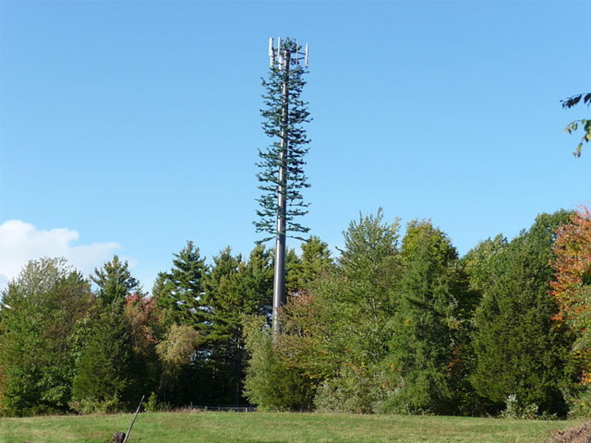
Author unknown, Source:
https://cms.hfg-journal.legrisch.com/img/asset/aW1hZ2VzLzY0MHB4LUNlbGxfcGhvbmVfdG93ZXJfZGlzZ3Vpc2VkXzIwMDguanBlZw==?w=2048&h=1536&s=0a997efe44059037e909110a745c764c
Accessed 29.11.2023
A mobile phone mast adapts to its
surroundings and blends into the forest as a tree, becoming part
of nature, which is so omnipresent that we dare not question its
existence.
This omnipresence is further complemented by the principles of User Experience Design, which contribute to redering the interfaces between machine and human increasingly invisible through ever more intuitive operation. Tailored to individual users with personalized configurations, the goals of the user-centric perspective play a crucial role in emotionally approaching the technical device. Computers become familiar partners and hide the lack of understanding of the mechanisms running in the background. What remains invisible is the concept of the computer program with its pre-formulated interaction possibilities and conditions.
In conclusion, it is evident that the omnipresence of machines, the invisibility of intuitive interaction, the fascination for technical functions, and the lack of understanding of machine mechanisms are the causes of user passivity, which fuels dependence on computer-based machines and maintains the balance of the relationship.
However, recognizing these established norms of computer-based machines and understanding their functions, including their limits and influences on their users, can be an exciting starting point for experiments at the limits of possibilities and the repurposing or redesign of these applications.
7 ... Dancing in between Shiny Gloom and Glossy Doom ...
At the outset of my inquiry, I posed the following questions. What influence does the conceptual "space design" of machines exert on users? How are the positions of humans and machines in their relationship to be described?In attempting to address these questions, I have examined and delineated the individual partners - human and machine - as well as their relational dynamics in my theoretical exploration. In this chapter, I aim to present my design concept based on my thesis and research question, the problem statement, objectives, and the considerations behind my visual decisions.
However, first, I will introduce the methodology that provided a foundation for the conception of my visual implementation.
7.1 Metaphor as methodology
The metaphor or analogy has proven to be a reliable and suitable tool for me in previous and in this exploration, enabling me to manifest and make considerations more tangible. In an associative manner, I draw upon banalities or everyday situations that serve as comparative facts in their abstraction, contributing to shift perspectives.7.2 Thesis and research question
... Dancing in between Shiny Gloom and Glossy Doom ..., represents an attempt to conceive machines and users as integral elements of a performance, with digital machines viewed as concepts choreographing their users.I aim to translate this thesis, regarding the causes and effects of this relational constellation, into the assertion that we are apathetic users of arrogant machines.
The background and foundation of this thesis and question stem from the theoretical discussion, which I will delve into below, in order to subsequently find a suitable visual metaphor in the practical work.
7.3 Challenge and goal
The relationship between humans and machines is to be considered based on a conceptual framework that emerges from the idea and design of the digital machine, and is manifested in the execution of the software and user interaction. Upon entering this “space,” i.e., the beginning of interaction with the machine, a user adapts to these conceptual conditions. Metaphorically speaking, the user becomes a choreographed dancer. These conceptual conditions or choreography are determined by the nature of computer program code, whose framing determinism does not allow for ambiguous interpretation in interaction and is not changeable in form.The ubiquity of computer-driven machines, intuitive interaction through user-centric design, fascination with technological advancement, and the inscrutable complexity of computers result in passivity and unconscious acceptance of the role of the user in the human-machine system.
I want to illustrate the described finding with a conclusion. Software concepts create inflexible conditions in which users become apathetic participants of the system, and machines become "arrogant" instructors.
However, I do not wish to condemn the use of computer-driven technologies or call for their rejection. Rather, the aim is to raise awareness about the passivity of users, which prevents questioning the relationship with computers and looking beyond the user interface.
7.4 Title
“... Dancing in between Shiny Gloom and Glossy Doom ...”, serves both as the title of my work and, in its complete form, as the concluding question in the letter “To the Apathetic User of Arrogant Machines.”Taken out of context, I aim to create an associative space for viewers that holds significance derived from the theoretical exploration and finds expression in the letter.
The meaning of the first part of the sentence, dancing in between, remains open-ended. It raises questions about who the dancer is and whether this dance is freestyle or subject to choreography. Through the course of the discussion, it becomes clear that the dancer represents the user, who is choreographed by the concept of the machine.
The second part of the sentence highlights the user’s hopeless situation. The use of shiny gloom and glossy doom embodies the endless dance in an undefined space between two states. In the context of the discussion, these terms serve as references to the acceptance or rejection of computer-driven technology. The tautology of the two words signifies that no decision is necessary, pointing to the omnipresence of technology and the impossibility of negating it. The accompanying adjectives shiny and glossy emphasize the user’s blind unconsciousness and superficial perception of machines. Thus, the second part of the title portrays the user’s hopeless situation in their interaction with a machine.
7.5 Visual translation
7.5.1 Visual conception
Chicken grill, Esselmann Fahrzeugbau GmbH & Co. KG, Source: https://www.esselmann.de/verkaufsfahrzeuge/haehnchengrill/#iLightbox[gallery_image_1]/1, Accessed 29.11.2023
In search of an adequate and tangible visual translation of my metaphor, I found inspiration in the structure and principle of a rotisserie grill.The construction embodies both the metaphorical examination of the relationship between machine and human, as well as the naive encounter of the latter, which turns them into choreographed dancers. In this visual translation, the users become the chickens, the grill represents the spatial construction of the machine, and the movement symbolizes the concept of the program (software). The continuous rotation of the chickens around their own axis plays an essential role. It embodies the passive helplessness and accepted fate of the users towards the rigid space formed by the machine. Their movement is choreographed, as the chickens, or rather the users, do not move independently within the system; they are moved in a predetermined direction dictated by the machine. 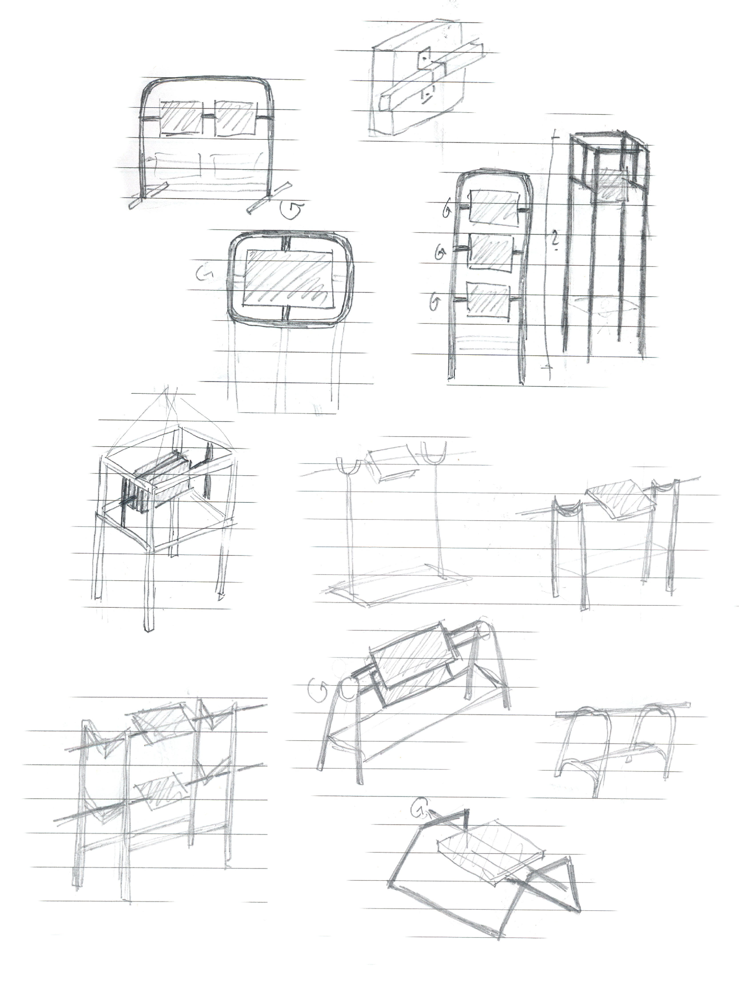
Pre-sketches
7.5.2 Construction
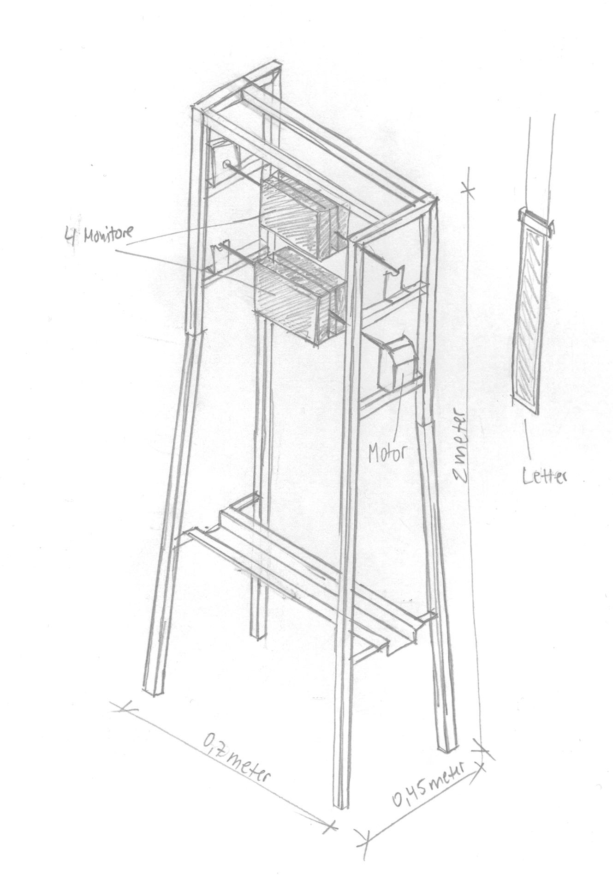Final sketch
The installation comprises a metallic structure composed of elements inspired by the analysis of the components of a rotisserie grill. The central components are the two vertically offset rotisserie spits, rotating continuously at a moderate speed around their own axis. Attached to these horizontally rotating spits are two computers each, facing away from each other. They are mounted slightly below and above eye level on the structure. Following the model, the construction is made of metal pipes and sheets. The framing apparatus suggests the cold, lifeless character of a massive machine entity due to the material properties and the two-meter height.For the fabrication of the framing structure, I used three-centimeter-wide square tubes to visually counterbalance the massive character of the computer construction. Additionally, I removed the dark mill scale from the steel material to achieve a glossy surface. The side panels, with one angled leg each and a staggered arrangement, create a space-expanding effect and enhance the overall stability of the construction. For the rotating computers, I utilized motorized rotisserie spits attached between two housings each. The use of two rotisserie spits and four computers in total reinforces the analogy to the arrangement of chickens in a grill device. A slip ring on the sides of the structure allows for power supply to the computers and simultaneous rotation of these units through the motors. 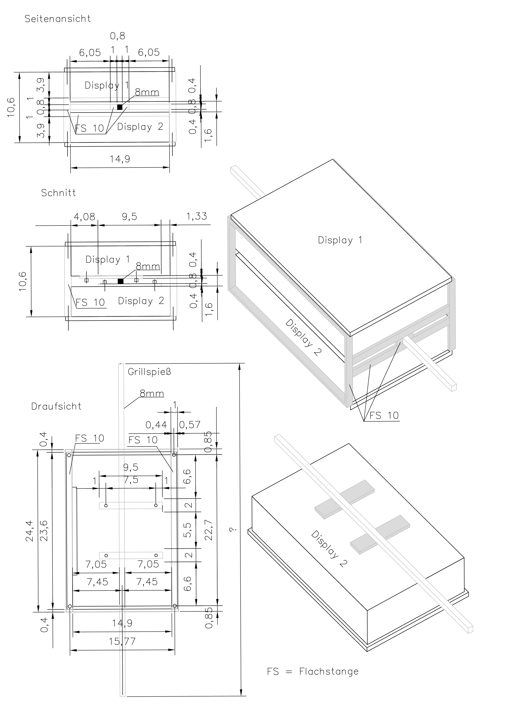
Detailed construction drawing, Construction monitors
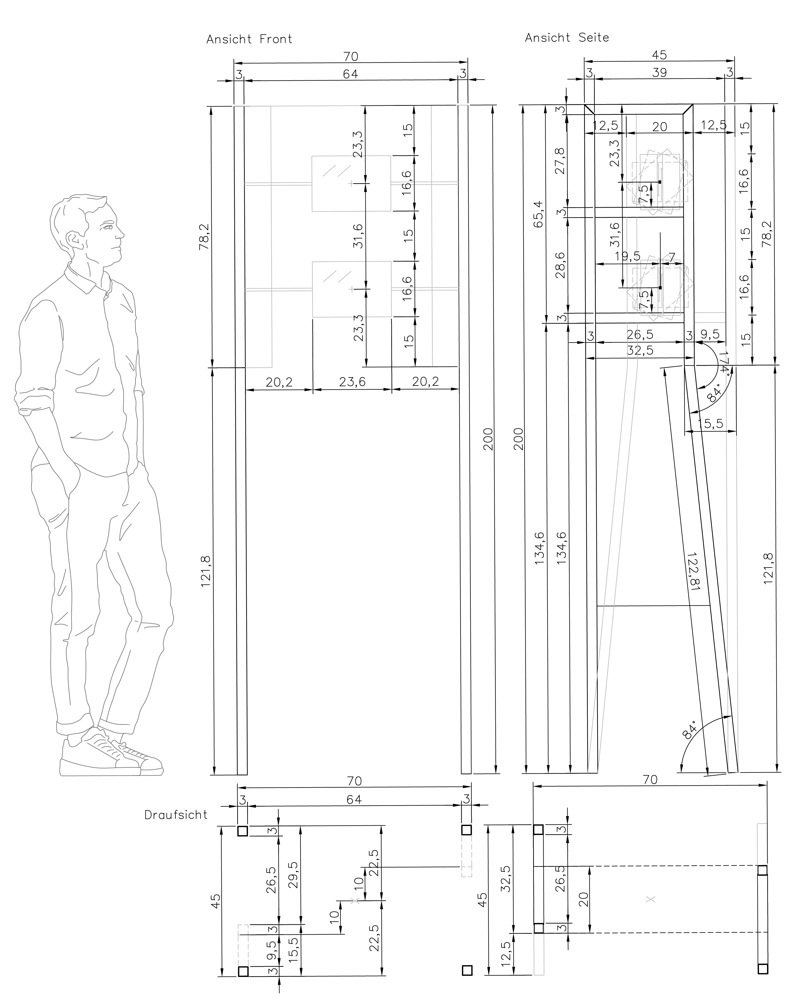Detailed construction drawing, Construction grill framing

7.5.3 Letter
The letter serves as a call to action for the user and encompasses both the content and conceptual aspects of the installation. Structured as a thought experiment, it consists of five sections, each starting with a description of the relationship between the user and the machine, accompanied by a thought-provoking question. The letter is provided with the installation in analog form and sticks to a metal plate saturated in grease as a reference to the rotisserie chicken.The design mirrors the movement of the computers within the framing structure, capturing their continuous rotation around their own axis. Reading the letter requires constant rotation to the front and back of the letter. To emphasize this manipulated, compulsive movement, subtle clues are integrated into the design. A directional arrow on the front indicates the reading direction and signifies the start of the text flow. Additionally, a lightweight paper with a grammage of 60gsm hints at the existence of text on the reverse side. The text is slightly angled on the paper to guide the reader to the corresponding text flow on the back. Furthermore, the last letters at the edges of the paper are tilted towards the paper’s edge, emphasizing the importance of the paper’s margin.

7.5.4 Computer displays
Within the construction, four computers are mounted on two skewers each, positioned within the structure resembling the arrangement of skewered chickens. Positioned on two staggered levels, the computers are attached to motorized skewers facing away from each other. They rotate horizontally around their own axes. Unlike conventional setups where screens face the user, here their orientation is determined by the rotation, presenting varied angles to the viewer. To perceive the displayed content, exhibition visitors are encouraged to follow a predefined movement, either approaching the screens or tracking their rotational motion.The computer displays continuously alternate between different screen brightness levels, producing a rhythmic flickering visible on the monitors, as dictated by a scripted sequence. This illustrates the first part of the letter, suggesting that we, as computer users, are drawn to the glow of screens like moths, remaining apathetic in their presence. In line with this premise, exhibition visitors are captivated by the flickering of the computer screens, intensified by the dimly lit room.
Through interaction by touching the computer screens, visitors can transition into users and discover the visual reference. Upon touch, a rotating grilled chicken appears on the display, being roasted in a grill device. The text line “choreographed by machines,”fully readable only upon touching the two staggered screens, prompts further interpretation of the artwork for the visitor.
7.5.5 README
In the exhibition, the README, presented as a website accessible via a QR code, serves as a kind of informative guide and can be regarded as a reference to machine manuals.The README provides background information on the project's thesis conception, insights into the underlying associations of the installation’s concept, as well as a brief guide for reading the letter.
The design of the README also adheres to the principles of the installation. The website begins with a flickering screen, mirroring the visual experience on the monitors of the computers within the construction. Clicking on the screen leads to the subpage with relevant exhibition background information and instructions. However, to read the page’s content, it is necessary to initially rotate the smartphone upside down, as the text is displayed mirrored in its normal position. This action once again prompts user engagement. Only by following the predetermined movement of the smartphone will the content become legible.
http://dancing-in-between-shiny-gloom-and-glossy-doom.online
7.6 Exhibition
The construction and the letter form an integrated installation unit, complemented by the use of oil, which serves associatively as a unifying element visible directly or indirectly in every part of the installation. It indirectly appears in the depiction of the grilled chicken on the computer display and is employed in fixing the letter to the metal surface as a means of attachment.Within the exhibition context, the construction occupies a darkened space, allowing the brightness of the screens to become the sole source of illumination, drawing visitors' attention. Positioned freely within the room to enable access from all sides, the construction invites visitors to engage with it actively.
As visitors observe the rotating monitors in the installation, read the letter, and utilize the README webpage, they are prompted to be guided by the prescribed movements, offering them a firsthand experience of the work’s concept. 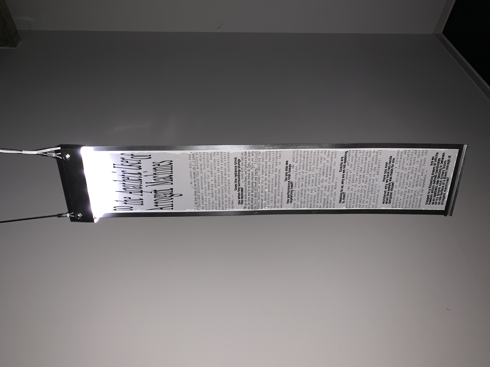 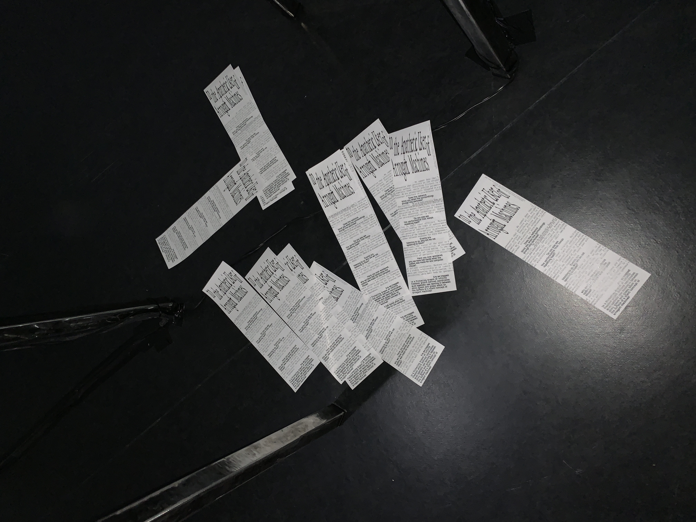 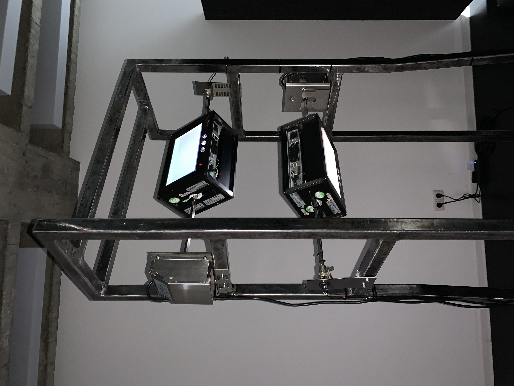
8 List of references
Cramer, Florian. Exe.cut(up)able statements. Poetische Kalküle und Phantasmen des selbstausführenden Texts. Munich: Wilhelm Fink Verlag, 2011.
De Landa, Manuel. “Meshworks, Hierarchies, and Interfaces”. In: John Beckmann: The Virtual Dimension. New York: Princeton Architectural Press, 1998.
Friedewald, Michael. Der Computer als Werkzeug und Medium: die geistigen und technischen Wurzeln des Personal Computers. Berlin und Diepholz: Verlag für Geschichte der Naturwissenschaften und der Technik, 1999.
Ford, Paul. "Code: An Essay". In: Bloomberg Businessweek, June 15 - June 28, 2015.
Frohe, Ursula. On Bruce Nauman. Video Archiv des Ludwig Forums Aachen. (o. J.). Accessed 24.10.2023. URL: https://videoarchiv-ludwigforum.de/artists-detail/bruce-nauman/.
Galloway, Alexander R.. "Two Statement on Carnivore". In: Lauren Cornell, Ed Halter: Mass Effect. Art and the Internet in the Twenty-First Century. Cambridge: MIT Press, 2015.
Heim, Michael. The metaphysics of virtual reality. New York: Oxford Univerity Press, 1993.
Hollanek, Tomasz. "Non-User-Friendly: Staging Resitance with Interpassiv User Experience Design". In: Christian Ulrik Andersen, Geoff Cox (Eds.): Machine Feeling, A Peer-Reviewed Journal. Volume 8, Issue 1, 2019.
Kittler, Friedrich. On the Implementation of Knowledge – Toward a Theory of Hardware. nettime-l. (o. J.). Accessed 30.11.2023. URL: http://hydra.humanities.uci.edu/kittler/implement.html.
LeWitt, Sol. "Paragraphs on Conceptual Art". In: Alexander Alberto, Blake Stimson: Conceptual Art: A Critical Anthology, Cambridge: MIT Press, 1999.
Licklider, Joseph Carl Robnett. Man-Computer Symbiosis. 1960.
Scherffig, Lasse. Feedbackmaschinen, Kybernetik und Interaktion. Cologne, 2014.
Turkle, Sherry. The second self : computers and the human spirit. New York: Simon & Schuster, Inc., 1984.
Vial, Stéphane. Being and the Screen, How the Digital Changes Perception. Cambridge: MIT Press, 2019.
Supplementary sources
Cambridge Dictionary. "User". Cambridge Dictionary (o. J.). Accessed 02.11.2023. URL: https://dictionary.cambridge.org/dictionary/english/user.
Dudenredaktion. "User". Duden online. (o. J.). Accessed 02.11.2023.URL:https://www.duden.de/rechtschreibung/User.
Dudenredaktion. "Raum". Duden online. (o. J.). Accessed 02.11.2023. URL: https://www.duden.de/node/118631/revision/1329043.
Lernpsychologie. "Behaviorismus". (o. J.). Accessed 29.11.2023. URL: http://www.lernpsychologie.net/lerntheorien/behaviorismus.
Medienkunstnetz. "Ping Pong“. (o. J.). Accessed 13.11.2023. URL: http://www.medienkunstnetz.de/werke/ping-pong/.
Medium. Mercadante, Curt. 10 Bruce Lee quotes to help you flow like water. 2019. Accessed 16.11.2023. URL: https://medium.com/@curtmercadante/10-bruce-lee-quotes-to-help-you-flow-like-water-906d71c3d2ac .
Tate. Alexander Calder, Mobile. 2008. Accessed 16.11.2023. URL: https://www.tate.org.uk/art/artworks/calder-mobile-l01686.
Graduation Project
... Dancing in between Shiny Gloom and Glossy Doom ...
Tine Kerres
2024, Hochschule Mainz